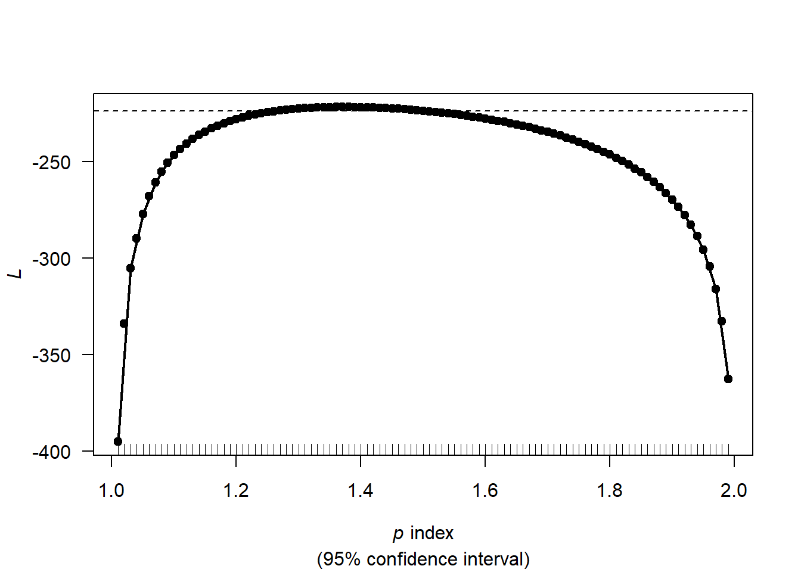
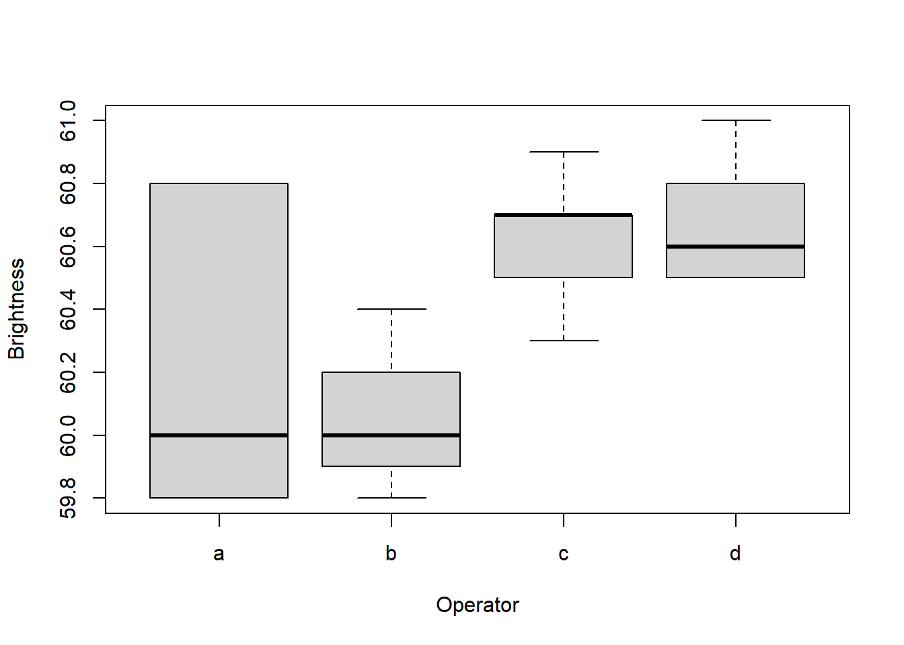

Chapter 13 Applied Stats Model II Lecture Note
13.1 List of Questions:
13.1.3 Midterm
Q1: ??? #the intercept is 3.5 #??? does the intercept needs the log?
GammaPoisson - why contains no 0s? -> only probability. unless I set a cut-off point.
ICC random variance/ total variance.
why specify the mean = mean() in summarise. duplicate –> creating a variable name
Q7c: # Convert back to glm() style object ??? why needs a conversion?
# why alternative style reached? # is it the aggregated model vs. individual count? or the same???
Q7a # then why the 70 and 60 combination has service???
Q7f: #??? why is the actual data 10% 0, but here is 4.5%? Diff so much
13.2 Class content overview:
Textbook: Extending the Linear Model with R, Second Edition, 2016 by Julian Faraway
Topics: • Generalized Linear Models – Models for Proportional data. – Models for Count data. – Models for Positive continuous data.
• Mixed Models – Random Effects – Linear Mixed Models – Generalized Linear Mixed Models – Repeated Measures – Longitudinal Data
• Dependent Data – Spatial Dependence. – Spatial Point Patterns. – Time Series.
• Nonlinear Models – Neural Networks – Deep Learning
13.5 GLMs_AdvancedTopics_SP2022
data(quilpie,package = "GLMsData")
quilpie$Phase <- as.factor(quilpie$Phase)
#head(quilpie,3) |> DisplayTablelibrary(tweedie)
Rain_TW_P <- tweedie.profile(Rain ~ Phase,
p.vec = seq(from=1,to=3,by=0.01),
do.plot=TRUE, data=quilpie)## Values of p between 0 and 1 and less than zero have been removed: such values are not possible.
## When the response variable contains exact zeros, all values of p must be between 1 and 2; other values have been removed.
## 1.01 1.02 1.03 1.04 1.05 1.06 1.07 1.08 1.09 1.1 1.11 1.12 1.13 1.14 1.15 1.16 1.17 1.18 1.19 1.2 1.21 1.22 1.23 1.24 1.25 1.26 1.27 1.28 1.29 1.3 1.31 1.32 1.33 1.34 1.35 1.36 1.37 1.38 1.39 1.4 1.41 1.42 1.43 1.44 1.45 1.46 1.47 1.48 1.49 1.5 1.51 1.52 1.53 1.54 1.55 1.56 1.57 1.58 1.59 1.6 1.61 1.62 1.63 1.64 1.65 1.66 1.67 1.68 1.69 1.7 1.71 1.72 1.73 1.74 1.75 1.76 1.77 1.78 1.79 1.8 1.81 1.82 1.83 1.84 1.85 1.86 1.87 1.88 1.89 1.9 1.91 1.92 1.93 1.94 1.95 1.96 1.97 1.98 1.99
## ...................................................................................................Done.
rain_Tweedie <- glm(Rain ~ Phase, data=quilpie,
family=tweedie(var.power=Rain_TW_P$p.max,
link.power=0))
coef(summary(rain_Tweedie))## Estimate Std. Error t value Pr(>|t|)
## (Intercept) -2.169054 1.956012 -1.108916 0.271681607
## Phase2 5.692284 1.967831 2.892670 0.005238606
## Phase3 3.515270 2.060019 1.706426 0.092854120
## Phase4 5.026875 1.972906 2.547954 0.013287172
## Phase5 4.646792 1.973386 2.354730 0.021665216Phases <- data.frame(Phase = factor(c(1, 2, 3, 4, 5)))
mu.Phases <- predict(rain_Tweedie, newdata=Phases,type="response")
p_MLE <- Rain_TW_P$p.max #tweedie profile
phi_MLE <- Rain_TW_P$phi.max #phi? -> dispersion para
Prob_Zero_Model_orig <- exp(-mu.Phases^(2 - p_MLE)/(phi_MLE*(2 - p_MLE))) # probability of it being 0. prob of observe rain + how much rain.
#??? quilpie %>% group_by(Phase) %>% summarize(prop0_dat = mean(Rain==0)) %>% cbind(Prob_Zero_Model)summary(Prob_Zero_Model_orig)## Min. 1st Qu. Median Mean 3rd Qu. Max.
## 0.07252 0.17811 0.25719 0.39032 0.51390 0.92989Phases <- data.frame(Phase = factor(c(1, 2, 3, 4, 5)))
mu.Phases <- predict(rain_Tweedie, newdata=Phases,type="response") #some contribution from possion + gamma, always positive.
p_MLE <- Rain_TW_P$p.max
phi_MLE <- Rain_TW_P$phi.max
Prob_Zero_Model <- exp(-mu.Phases^(2 - p_MLE)/(phi_MLE*(2 - p_MLE)))
library(tidyverse)
#quilpie %>% group_by(Phase) %>% summarize(prop0_dat = mean(Rain==0)) %>% cbind(Prob_Zero_Model)summary(mu.Phases)## Min. 1st Qu. Median Mean 3rd Qu. Max.
## 0.1143 3.8429 11.9143 13.4377 17.4235 33.8937summary(Prob_Zero_Model)## Min. 1st Qu. Median Mean 3rd Qu. Max.
## 0.07252 0.17811 0.25719 0.39032 0.51390 0.92989library(tidyverse) #package of packages. needed for the |> , groupby, summarise need tidyverse.
quilpie |> group_by(Phase) |> summarize(prop0_dat = mean(Rain==0)) |> cbind(Prob_Zero_Model)## Phase prop0_dat Prob_Zero_Model
## 1 1 0.8571429 0.92988539
## 2 2 0.0000000 0.07252326
## 3 3 0.7142857 0.51390033
## 4 4 0.2352941 0.17810940
## 5 5 0.2380952 0.25718557#prop0_dat: what % has , actual vs. predicted. quilpie's variable contains the Rain.
# summarise(mean = mean())
#86 count = a nameCPoiGam <- tweedie.convert(xi=p_MLE, mu=mu.Phases, phi=phi_MLE)
PoiGamPred <- rbind("Poisson mean" = CPoiGam$poisson.lambda,
"Gamma mean" = CPoiGam$gamma.mean,
"Gamma dispersion" = CPoiGam$gamma.phi)
colnames(PoiGamPred) <- paste0("Phase", 1:5)
#PoiGamPred %>% round(4) %>% DisplayTable
#??? the %>% = |> but not work?#PoiGamPred |> round(4) |> DisplayTable
#https://stackoverflow.com/questions/67744604/what-does-pipe-greater-than-mean-in-rPoiGamPred## Phase1 Phase2 Phase3 Phase4 Phase5
## Poisson mean 0.07269394 2.623848 0.6657259 1.725357 1.3579574
## Gamma mean 0.16582834 1.362530 0.6088689 1.065178 0.9254371
## Gamma dispersion 1.45160559 97.999331 19.5694557 59.892898 45.2090019#??? no exact 0s?13.6 MM-RandomEffects_Spring2022
random effect:
not interested in specific level. vs. fixed effect - not individual slope? dummy interaction with the focal variable.
fixed effect test the mean vs. random effect test the variance (not interested in particular mean, want to see if mean actually varied across levels). ??? S11: variance depends on the random effect but mean is not affected?
P14: reading the box plot. mean, median, range??? P15: what’s the n? What’s the Sum Sq?
P21: shift in the mean vs. variance and mean 0. how do I know how much the mean is shifted???
data(pulp, package="faraway")
plot(y=pulp$bright, x=pulp$operator,xlab = "Operator", ylab = "Brightness")
lm_model <- lm(bright ~ operator, pulp)
anova(lm_model)## Analysis of Variance Table
##
## Response: bright
## Df Sum Sq Mean Sq F value Pr(>F)
## operator 3 1.34 0.44667 4.2039 0.02261 *
## Residuals 16 1.70 0.10625
## ---
## Signif. codes: 0 '***' 0.001 '**' 0.01 '*' 0.05 '.' 0.1 ' ' 1Prediction for each operator is simply the sum of fixed and random effect = BLUP??? components. -> S24: not in the data. new operator will take a 0 in intercept change? but the intercept can be predicted with the Xs??? -> yes, if there is blocking. how is the blend different from the operator as blocking? discrete vs. continuous?
S30: how does it match? shouldn’t it be mean + the BLUPS???
S34: fixed are irrigation that is interest. field randomly = replications?
Blocking
Split plot
Nested effect vs. random effect?
Residual plots
General: interaction terms = depends. must happen when sth happen then interaction.